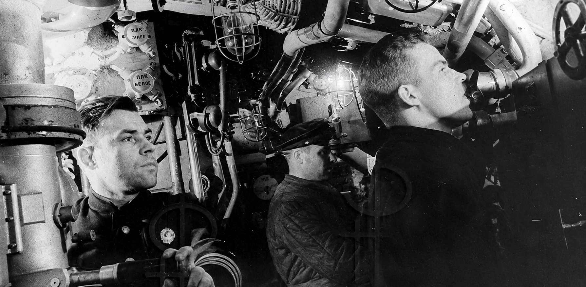

ПОДВИГ ПЛ «Щ-408»
В ночь с 7 на 8 мая 1943 года подводная лодка «Щ-408» вышла из Кронштадта в боевой поход.

В ночь с 7 на 8 мая 1943 года подводная лодка «Щ-408» вышла из Кронштадта в боевой поход.

Подводная лодка «Щ-406» была спущена на воду в 1939 г., а в 1941-м вошла в состав Балтийского флота.

«Щ-303» – одна из самых прославленных лодок Балтийского флота времен Великой Отечественной войны.